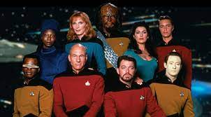

Merhaba ben Furkan, Ankara'da yaşıyprum. Bilimkurgu izlemeyi ve okumayı seviyorum. Tam bir Start Trek hayranıyım! Web geliştirme ile ilgileniyorum. Kodluyoruz'un bu eğitim seti sayesinde harika şeyler öğrendim ve öğrenmeye devam ediyorum. Siz de aramıza katılın.
Star Trek: The Next Generation
Uzay Yolu: Yeni Nesil GEne Roddenberry tarafından yaratılmış olan kurgusal Uzay Yolu evreninde geçen bir bilim-kurgu dizisidir. Türkiye'de 1990-1997 yılları arasında Star Tv'de yayınlanmıştır.